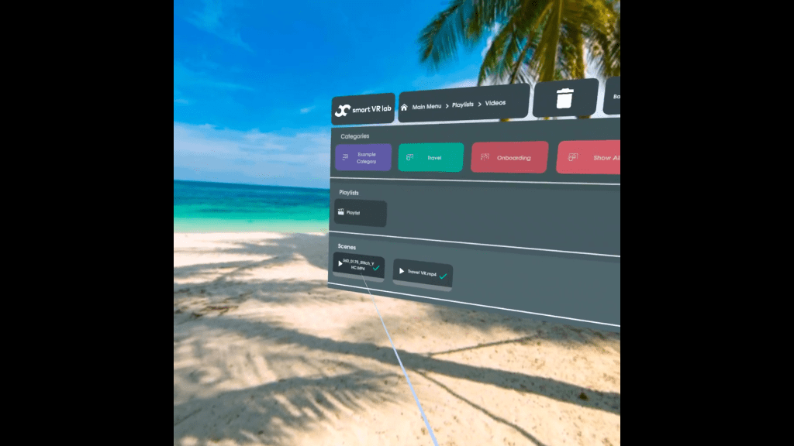

- Meta Quest with Smart VR Lab installed and authorized
- Content published to the device (Playlists/Interactives)
- Wi-Fi connection
You can browse, download, and play assigned content in the headset.
Navigating the Smart VR Lab app
Knowing how to use the Smart VR Lab app is important. By reading this short article you'll quickly find out how everything works.
How to navigate the Smart VR Lab App on Oculus
Step 1 - How to select the content
Using the Smart VR Lab app is very easy. Let's go through the steps on how you can do this.
Step 2 - Categories
In the first row you can see the categories. If you haven't created any categories yet, please read this article.
If you click on one of the categories, the second row will appear.
NOTE: You can close the second row by clicking on the Close button on the top right corner.
Step 3 - Playlists
In the second row you can see all content that has been published to this device.
There are two content types that are displayed:
- Playlists
- Interactives
If you don't see any content appearing in the second row, it means you didn't publish content to your device yet. Read this article to see how to publish content to your device.
If you click on an Interactive, it will immediately start playing. If you click on a playlist, a third row will appear and your scenes will appear.

Step 4 - Scenes
In the third row you'll be able to see all videos or images that are inside a playlist. If this row remains empty, it means your playlist is empty.
Please read this article on how to add video items to your playlist.
If you click on a video or an image, the player will open and you can view the content within it.
